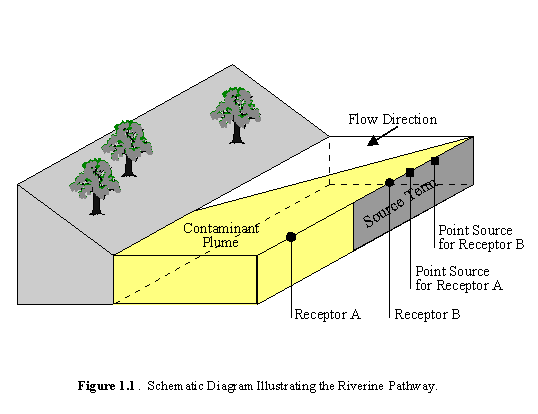

PNNL-11176
UC-630
The Multimedia Environmental Pollutant
Assessment System (MEPAS)®:
Riverine Pathway Formulations
G. Whelan
J. P. McDonald
November 1996
Prepared for the U.S. Department of Energy
under Contract DE-AC06-76RLO 1830
Pacific Northwest National Laboratory
Richland, Washington 99352
Copyright 1989-1996 Battelle Memorial Institute
Preface
The Multimedia Environmental Pollutant
Assessment System (MEPAS) is a physics-based environmental analysis code
integrating source-term, transport, and exposure models for concentration,
dose, or risk endpoints. Developed by Pacific Northwest National Laboratory(a)
for the U.S. Department of Energy, MEPAS is designed for site-specific
assessments using readily available information. Endpoints are computed
for chemical and radioactive pollutants. For human health impacts, risks
are computed for radioactive and hazardous carcinogens and hazard quotients
for noncarcinogens. This system has wide applicability to environmental
problems using air, groundwater, surface-water, overland, and exposure
models. MEPAS enables users to simulate release of contaminants from a
source; transport of contaminants through the air, groundwater, surface-water,
or overland pathways; and transfer of contaminants through food chains
and exposure pathways to the exposed individual or population. Whenever
available and appropriate, guidance and/or models from the U.S. Environmental
Protection Agency, International Commission on Radiological Protection,
and National Council on Radiation Protection and Measurements were used
to facilitate compatibility and acceptance.
Although based on relatively standard
transport and exposure computation approaches, MEPAS uniquely integrates
these approaches into a single system providing a consistent basis for
evaluating health impacts for a large number of problems and sites. Implemented
on a desktop computer, a user-friendly platform allows the user to define
the problem, input the required data, and execute the appropriate models.
This document describes the mathematical formulations used in the surface-water
component of MEPAS.
(a) Pacific Northwest National Laboratory is operated
for the U.S. Department of Energy by Battelle Memorial Institute under
Contract DE-AC06-76RLO 1830
Summary
This report describes the mathematical
formulations used for contaminant fate and transport in the riverine pathway
of the Multimedia Environmental Pollutant Assessment System (MEPAS). Of
the many types of surface-water bodies (e.g., nontidal rivers, estuaries,
lakes, open coasts, reservoirs, impoundments, etc.) in which contaminant
fate and transport could be simulated, only a nontidal river model is currently
incorporated into MEPAS. Nontidal rivers refer to freshwater bodies with
unidirectional flow in definable channels. Because the MEPAS methodology
is compositely coupled, other surface-water models can be added when deemed
necessary.
The surface-water component of MEPAS
provides estimates of contaminant concentrations in a river at locations
downstream from a release point. The computed contaminant concentrations
are used by the exposure assessment component of MEPAS to calculate dose
and the resulting health effects to the surrounding population. Potential
exposure of humans to contaminants via rivers can be associated with ingestion
(e.g., drinking contaminated water), inhalation of volatile pollutants
(e.g., showering), dermal contact to chemicals (e.g., swimming), or external
dose from radionuclides (e.g., swimming).
Because annual-average contaminant
releases to a river in the MEPAS methodology are relatively long term compared
to typical contaminant travel times in a river, the migration and fate
of contaminants through the riverine pathway are described by the steady-state,
two-dimensional advective-dispersive equation for solute transport. The
results are based on an analytical solution that is well established in
the scientific literature. The surface-water equation accounts for the
major mechanisms of constituent persistence (i.e., degradation/decay),
advection, and hydrodynamic dispersion. Persistence is described by a first-order
degradation/decay coefficient. Radionuclide decay products are also accounted
for. Advection is described by constant unidirectional flow in the longitudinal
direction. Hydrodynamic dispersion is accounted for in the lateral direction.
The processes associated with adsorption/desorption between the water column
and suspended and bed sediments are not addressed. Neglecting these processes
should, in most cases, represent a conservative assumption with regard
to water column contaminant concentrations.
Contamination can enter the riverine
environment in one of three ways. The groundwater pathway can supply transient
contaminant fluxes along the stream bank adjacent to the aquifer. Overland
runoff can supply nonpoint-source contaminant fluxes from the land adjacent
to the stream. Finally, the surface-water component of MEPAS allows direct
discharges to the stream.
The assumptions listed and/or discussed in this document
are itemized below for easy reference. Section numbers are provided where
a particular assumption is discussed in more detail.
- Flow is steady and uniform in the longitudinal direction.
- The effects of contaminant adsorption to or desorption from
sediment particles suspended in the water column or in the river bed are
negligible; therefore, all contaminants travel at the same speed as the
river flow.
- Contaminant releases to the riverine pathway are assumed
to be long term relative to the travel time in the river. Therefore, a
steady-state solution to the advective-dispersive equation is applicable
for describing contaminant transport (Section 2.0).
- The river geometry can be represented by a rectangular cross-section.
- A line source along the stream bank can be approximated as
a point source located at the center of the line source; therefore, only
the point source equation is used in MEPAS (Section 2.1).
- Advection dominates dispersion in the longitudinal direction,
and the contaminant plume is assumed to be fully mixed over the depth of
the river; therefore, dispersion is only considered in the lateral direction.
- An appropriate lateral dispersion coefficient can be estimated
based on the flow velocity and depth of the river (Section 2.5).
- Degradation/decay for all contaminants is first-order.
- The single concentration value specified by the user for
the measured concentrations option is assumed to be temporally constant.
Acknowledgments
The authors thank Keith Shields for his technical review
of this document, Robert Buchanan for editorial review, and Vickie Atkinson
for helping to prepare the manuscript. Thanks are also extended to Larry
Bagaasen, John Buck, Karl Castleton, Jim Droppo, Gariann Gelston, Andre
dé Hamer, Bonnie Hoopes, Chikashi Sato, Dennis Strenge, and Monique
Van der Aa, all of whom have, in some way, influenced the development of
the waterborne codes with their technical guidance and suggestions. Appreciation
also goes out to all the people who use MEPAS and have alerted us to potential
problems in the code and offered suggestions for its improvement.
1.0 Introduction
This report describes the mathematical
formulations used for contaminant fate and transport in the riverine pathway
of the Multimedia Environmental Pollutant Assessment System (MEPAS). It
is one in a series of reports that collectively describe the components
of MEPAS. Other volumes address the following topics:
- Source-Term Release (Streile et al. in press) - presents
the mathematical formulations for simulating the release of contaminants
from a source term to the atmospheric and waterborne transport pathways.
- Ground Water Pathway (Whelan et al. 1996) - presents the
mathematical formulations for contaminant fate and transport in the groundwater
pathway of MEPAS.
- Atmospheric Pathway (Droppo and Buck 1996) - presents the
mathematical formulations for contaminant fate and transport in the atmospheric
pathway of MEPAS.
- Exposure Pathway and Human Health Impact Assessment Models
(Strenge and Chamberlain 1995) - describes the methods used by MEPAS to
compute dose and human health impacts to selected individuals and populations
caused by exposure to pollutants.
The surface-water component of MEPAS provides
estimates of contaminant concentrations in a river at locations downstream
from a release point. The computed contaminant concentrations are used
by the exposure assessment component of MEPAS to calculate dose and the
resulting health effects to the exposed population. Potential exposure
of humans to contaminants via rivers can be associated with ingestion (e.g.,
drinking contaminated water), inhalation of volatile pollutants (e.g.,
showering), dermal contact to chemicals (e.g., swimming), or external dose
from radionuclides (e.g., swimming). A schematic diagram illustrating the
riverine pathway is presented in Figure 1.1.
Because contaminant releases to a river
in the MEPAS methodology are generally of long duration relative to the
travel time from the point of release to a receptor, the migration and
fate of contaminants through the riverine pathway are described by the
steady-state, two-dimensional advective-dispersive equation for solute
transport. The results are based on an analytical solution that is well
established in the scientific literature. The surface-water equation accounts
for the major mechanisms of constituent persistence (i.e., degradation/decay),
advection, and hydrodynamic dispersion. Persistence is described by a first-order
degradation/decay coefficient. Radionuclide decay products are also accounted
for. Advection is described by constant unidirectional flow in the longitudinal
direction. Hydrodynamic dispersion is accounted for in the lateral direction.
The processes associated with adsorption/desorption between the water column
and suspended and bed sediments are not addressed. Neglecting these processes
should, in most cases, represent a conservative assumption with regard
to water column contaminant concentrations.

Contamination can enter the riverine pathway in one of
three ways. The groundwater pathway can supply transient contaminant fluxes
along the stream bank adjacent to the aquifer. Overland runoff can supply
nonpoint-source contaminant fluxes from the land adjacent to the stream.
Finally, contaminants can be discharged directly to the river.
The specific topics addressed in Chapter 2.0 of this report are as follows:
- Advective-Dispersive Equation - The advective-dispersive
equation describes solute migration in the riverine environment. The form
of the equation used is briefly discussed.
- Contaminant Concentration Equation - The solution to the
advective-dispersive equation used in the riverine component is presented.
The solution describes contaminant concentrations.
- Multiple River Receptors - The technique employed to estimate
concentrations for more than one river receptor is presented.
- Mixing Length - A lateral mixing length is defined, which
describes the lateral distance in which the migrating solute plume can
be considered to be fully mixed, and is used in the multiple river receptor
estimation technique. The time for the contaminant to travel from the waste
site through the river to a receptor of concern as well as the lateral
dispersion coefficient are also described. Both are used in determining
mixing lengths.
The specific topics addressed in Chapter 3.0 of this report
are as follows:
- Contaminant Degradation/Decay - The technique for computing
the degradation of chemicals and/or the decay of radionuclides is described,
as well as the algorithms used to assess degradation/decay at the source
of contamination only, in the environment only, or both.
- Surface Water Mass Balance at the Source - This section briefly
describes the features included in the MEPAS methodology to ensure that
mass is conserved in the analysis.
- Measured Concentrations in the Riverine Environment - This
section describes the option within the methodology of using measured environmental
contaminant levels in the assessment of health impacts to downstream sensitive
receptors, as opposed to performing transport calculations to estimate
these environmental concentrations.
Chapter 4.0 provides a listing of the equation notations
found throughout the report.